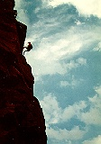

Eldorado Canyon

Eldorado Canyon is not actually in Rocky Mountain National Park, but if
you're willing to take a 60 minute drive to this awesome State Park, we can
provide some of the best climbing in Colorado. Choose from beginner climbs
to more advanced routes. Eldorado offers climbs of 400 to 600 feet, high on
a solid rock wall. All climbs are only a short distance from the parking
lot. No matter what your skill and experience, we'll tailor the Eldorado
Canyon tour to fit you.
Difficulty Level: Beginner to expert
depending on climber
Time: Allow for one day
Physical stress: Mild to extreme,
depending upon climb